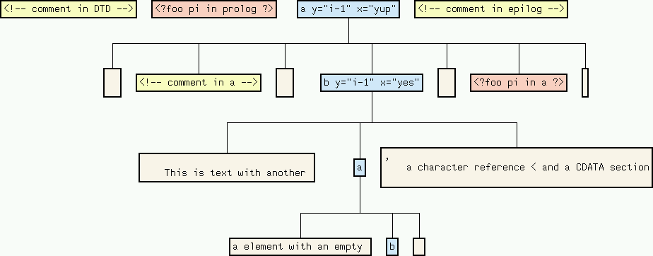
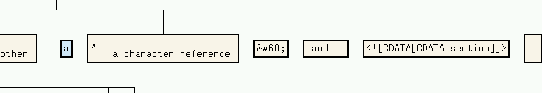
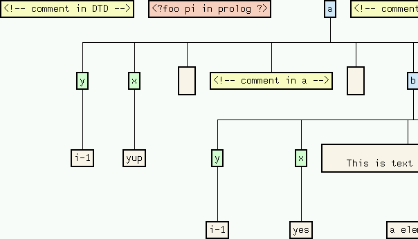

The Program fxviz
The Program fxviz
The Program fxviz
The Program fxviz
 |
Description |
|
An Example |
|
Summary of Options |
|
Tributes |
If infile is given, fxviz reads its input document from that file, otherwise from standard input. By default, it prints its output to the standard output. The generated tree contains the following kinds of nodes:fxviz [option ...] [infile]
Most of the nodes are annotated with their starting position in the XML source; attribute value nodes provide the attribute type instead.
node type color information unfolds into comment yellow file position - processing instruction orange file position - element light blue file position attributes text beige file position data segments attribute light green - - attribute value beige attribute type -
A text node is usually the result of merging several adjacent text fragments into a single one. It is, however, possible to unfold a text node into the sequence of fragments it consists of.
Simimlarly, an element node can be unfolded such that each of its attributes is represented by its own attribute node as a child of the element.
The graph description produced by fxviz will display the document tree as follows:<!DOCTYPE a [ <!ELEMENT a ANY> <!ELEMENT b ANY> <!-- comment in DTD --> <!ATTLIST a x NMTOKEN "foo" y ID #IMPLIED> <!ATTLIST b x (yes|no) #REQUIRED y IDREFS #IMPLIED> ]> <?foo pi in prolog ?> <a x="yup" y="i-1"> <!-- comment in a --> <b x="yes" y="i-1"> This is text with another <a>a element with an empty <b/> </a>, a character reference < and a <![CDATA[CDATA section]]> </b> <?foo pi in a ?> </a> <!-- comment in epilog -->

Each node in the tree is connected to each of its children by an edge. Additionally, the nodes are annotated this their starting postions in the XML source. These positions can be viewed by selecting Node Information => Source Position in the vcg menu:

Text nodes are merged such that no text node has another text node as a direct sibling. If you wish to see how a merged text node is composed of text fragments, apply vcg's Unfold Subgraph function to that node. For the second text-node in the b-element this results in:

Additional information about attributes of elements is also available by applying vcg's Unfold Subgraph function to the element node: the attributes are removed from the element node's label, and for each attribute a new attribute node is inserted before the element's content. Each attribute node is labeled with the attribute name and has as a single child the attribute value:

The values of defaulted attributed are marked, and unspecified attributes are either marked as implied or missing:

Finally, if you are interested in the attribute type of some specified attribute, use the Node Information => Attribute Type function: